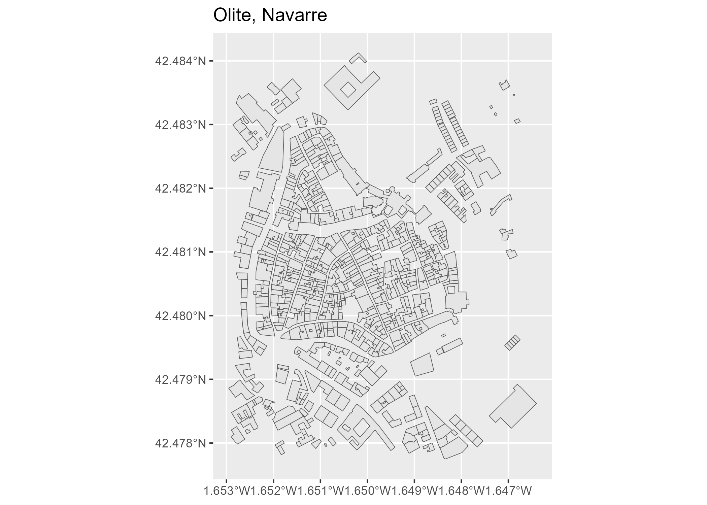

CatastRoNav provides access to services from the Cadastre of Navarre. With CatastRoNav, you can retrieve addresses, buildings and cadastral parcels through its INSPIRE ATOM and WFS services. You can also download georeferenced images through its WMS service.
Installation
You can install the development version of CatastRoNav from r-universe:
# Install CatastRoNav from r-universe.
install.packages(
"CatastRoNav",
repos = c(
"https://ropenspain.r-universe.dev",
"https://cloud.r-project.org"
)
)Alternatively, install the development version from GitHub with the pak package:
pak::pak("rOpenSpain/CatastRoNav")Package API
Functions in CatastRoNav are organized by source service. Function names follow the catrnav_*service*_*description* convention.
INSPIRE services
CatastRoNav retrieves cadastral data from the Cadastre of Navarre through three INSPIRE services:
ATOM service
The ATOM service downloads complete municipal datasets for addresses, buildings and cadastral parcels. Download functions return sf objects from the sf package. Index and search functions return tibbles. Index reference timestamps use UTC. Downloads return NULL if the data cannot be downloaded or no municipality matches the search. Errors when reading spatial files propagate to the caller.
These functions use the catrnav_atom_get_*() prefix.
Municipality inputs must be a single name, partial name or cadastral code. Codes can be supplied as strings or numbers, such as "201" or 201. Empty values, NA and vectors of municipalities produce an error before any network request.
WFS service
The WFS service retrieves cadastral features within a supplied bounding box. Results are returned as sf objects from the sf package. For complete municipal downloads, prefer the ATOM service.
These functions use the catrnav_wfs_get_*() prefix.
WMS service
The WMS service downloads georeferenced map images for addresses, buildings and cadastral parcels. catrnav_wms_get_layer() returns a SpatRaster object from the terra package.
Terms and conditions of use
Data are provided by the Government of Navarre under the Creative Commons Attribution 4.0 International (CC BY 4.0) license. The service is provided “as is” without warranties of any kind, either express or implied.
Data source: SITNA – Government of Navarre.
Examples
Retrieve features with the WFS service
library(CatastRoNav)
library(ggplot2)
wfs_get_buildings <- catrnav_wfs_get_buildings_bbox(
c(-1.652563, 42.478016, -1.646919, 42.483333),
srs = 4326
)
# Plot the buildings.
ggplot(wfs_get_buildings) +
geom_sf() +
ggtitle("Olite, Navarre")
Cache management
Downloaded files are always cached locally, as in CatastRo. The ATOM cache argument is deprecated and no longer changes this behavior. Use a temporary cache_dir for session-only downloads and update_cache = TRUE to refresh ATOM or WMS data. Failed ATOM updates preserve the previous cached file. ATOM downloads check the file size with a HEAD request and report downloads larger than 20 MB before fetching the body.
ATOM indexes are stored in databases, municipal downloads in atom_ad, atom_bu or atom_cp and WFS responses in wfs_inspire_cache. WFS queries reuse their cached response until the cache is cleared. Municipal ZIP archives are read directly without extracting their contents to disk.
Use catrnav_detect_cache_dir() to inspect the active cache, catrnav_set_cache_dir() to configure it and catrnav_clear_cache() to remove cached data.
ATOM downloads and WFS queries use the catastronav_timeout and catastronav_ssl_verify options. If unset, CatastRoNav checks the CATASTRONAV_TIMEOUT and CATASTRONAV_SSL_VERIFY environment variables, then the catastro_timeout and catastro_ssl_verify options. The defaults are 300 seconds and enabled SSL verification. WFS queries restore the previous CatastRo options after the request. For WMS requests, pass mapSpain settings through the options argument of catrnav_wms_get_layer().
For a municipal download that lasts only for the current session, replace the deprecated cache = FALSE argument with a temporary cache path:
# Before (deprecated):
# catrnav_atom_get_parcels("201", cache = FALSE)
# Use a temporary cache instead.
catrnav_atom_get_parcels(201, cache_dir = tempdir())Citation
Hernangómez D (2026). CatastRoNav: Interface to the INSPIRE Services of the Cadastre of Navarre. doi:10.5281/zenodo.6366407. https://ropenspain.github.io/CatastRoNav/.
A BibTeX entry for LaTeX users is:
@Manual{R-catastronav,
title = {{CatastRoNav}: Interface to the INSPIRE Services of the Cadastre of Navarre},
year = {2026},
version = {1.0.0.9000},
author = {Diego Hernangómez},
doi = {10.5281/zenodo.6366407},
url = {https://ropenspain.github.io/CatastRoNav/},
abstract = {Provides access to public spatial data from the Cadastre of Navarre through its INSPIRE ATOM feeds, Web Feature Service and Web Map Service endpoints provided by the Government of Navarre through the Sistema de Información Territorial de Navarra (SITNA). Supports complete municipal dataset downloads, bounding box feature queries and georeferenced map image downloads for addresses, buildings and cadastral parcels.},
}Contributing
See the source code and issue tracker on GitHub.
See also
The CatastRo package provides similar functionality for the rest of Spain, excluding the Basque Country and Navarre.